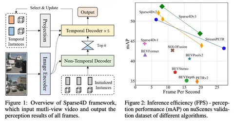

Сегодня разберём одну из немногих статей об End-to-End 3D Detection and Tracking. Речь пойдёт о детекторе Sparse4Dv3 с хорошими метриками на nuScenes — главном опенсорс-датасете для автономного транспорта.
Sparse4D — camera-only multi-view 3D-детектор, который авторы постоянно развивают. Сегодня у него уже три версии, и в самой последней появился multi-object tracking. Но обо всём по порядку.
Sparse4D v1. Первый подход — энкодер-декодер архитектура camera-only multi-view детектор с временным контекстом.
Из кадров видео, которое подаётся на вход, выделяются image-features с нескольких камер с разными масштабами и таймстемпами. Декодер делает последовательный фьюз этих фичей, используя 3D-anchor-box. После декодера инстансы рефайнят (доуточняют) с учётом confidence. Результат работы модели — предсказание положения 3D-box (задаются координатами, размерами и скоростью).
Sparse4D v2 — улучшение первой версии за счёт применения рекуррентной схемы с фьюзом временного контекста. Дополнительно улучшить сходимость обучения модели на ранних шагах помогли данные о глубине лидара.
Sparse4D v3. Авторы ускорили обучение и улучшили сходимость модели:
А ещё в этой версии появилась возможность трекинга. Чтобы реализовать её, авторы добавили в информацию каждого предикта идентификатор (id): для предиктов из предыдущих кадров они сохранялись, для новых — генерировались заново. Так процесс трекинга не требует дообучения или файнтьюнинга детектора. Это просто дополнительная функциональность — назначение и сохранение id во времени.
Познакомиться с решением поближе можно на Github авторов.
Разбор подготовила
404 driver not found
